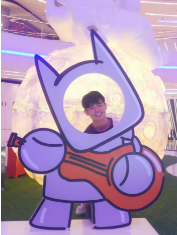

|
Jian Hu I am currently a PhD student within the Computer Vision Group in the School of Electronic Engineering and Computer Science at Queen Mary, University of London, supervised by Prof. Shaogang Gong. Before joining the Computer Vision Group in QMUL, I was in Shanghai Jiao Tong University , supervised by Prof. Hongya Tuo and working closely with Prof. Junchi Yan. Currently my area of expertise is in deep learning and computer vision, especially in Transfer learning, Semi-supervised learning, Incremental learning, Lifelong Learning and their related applications. Email / Google Scholar / Website / Github |
 |
ResearchI'm interested in computer vision, machine learning, and image processing. I am currently primarily focused on how to achieve cross-domain knowledge transfer in in-the-wild scenarios. Representative papers are highlighted. |

|
Uncertainty-based Heterogeneous Privileged Knowledge Distillation for Recommendation System
Ang Li*, Jian Hu*, Ke Ding, Xiaolu Zhang, Jun Zhou, Yong He SIGIR, 2023 arXiv / bibtex We propose a novel algorithm to address heterogeneous knowledge distillation-based transfer learning in industrial recommendation systems. |

|
Global-Aware Model-Free Self-distillation for Recommendation System
Ang Li*, Jian Hu*, Lu Wei, Ke Ding, Xiaolu Zhang, Jun Zhou, Yong He DASFAA, 2023 Paper / bibtex We introduce a novel algorithm called Global-aware Model-free Self-Distillation to address label noise in training data in Alipay advertising system. |

|
Learning Unbiased Transferability for Domain Adaptation by Uncertainty Modeling
Jian Hu*, Haowen Zhong*, Fei Yang, Shaogang gong, Guile Wu, Junchi Yan ECCV, 2022 arXiv / code Combining mip-NeRF 360 and grid-based models like Instant NGP lets us reduce error rates by 8%–77% and accelerate training by 24x. |

|
Domain adaptive YOLO for one-stage cross-domain detection
Shizhao Zhang, hongya Tuo, Zhongliang Jing, Jian Hu* ACML, 2023 arXiv / bibtex We introduce a novel algorithm called Global-aware Model-free Self-Distillation to address label noise in training data in Alipay advertising system. |
Miscellanea |


{kind=link}
|
Feel free to steal this website's source code. Do not scrape the HTML from this page itself, as it includes analytics tags that you do not want on your own website — use the github code instead. Also, consider using Leonid Keselman's Jekyll fork of this page. |